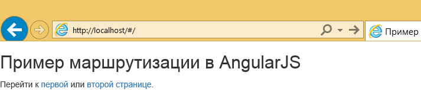
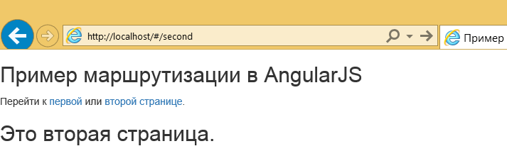

Маршрутизация в AngularJS
Этот пример связан с маршрутизацией в AngularJS. Первое, что я обнаружил при поиске в сети аналогичных ресурсов — что нет ещё достаточно простого примера, который подходит для новичков в Angular. Итак, я постараюсь чтобы этот раздел оказался настолько простым, насколько это возможно.
Что такое маршрутизация в веб-приложении?
Как правило, веб-приложения используют читаемые адреса и описывают содержание, которое за ними скрывается. Типичным примером может быть щелчок по ссылке на главную страницу: это означает, что действие будет выполнено на стороне сервера, затем результат передан в другое представление на стороне клиента. Мы часто оказываемся в подобной ситуации после взаимодействия в корне веб-приложения (/ или index.html), заметив изменения в адресной строке браузера.
Идея примера
В этом примере мы покажем простую навигацию по страницам приложения. Предположим, что у нас есть главная страница с двумя ссылкам и каждая из них будет перенаправлять на определённую страницу.
Чтобы лучшее понять нашу идею мы реализуем встроенную навигацию. Это означает, что мы хотим, чтобы содержимое наших страниц отображалось внутри исходной/главной страницы.
AngularJS предлагает директиву ngView для реализации вышеупомянутой функциональности. Конкретно, директива ngView дополняет сервис $route за счёт включения шаблона текущего маршрута в основной файл макета. То есть каждый раз, когда меняется текущий маршрут, включенное представление меняется в соответствии с настройками сервиса $route.
Итак, подразумевая что наш index.html содержит простое предложение с двумя ссылкам, мы хотим отобразить шаблоны (в соответствии с нажатыми ссылкам) ниже этого предложения. Это должно выглядеть так:
<p>Перейти к <a href="#first">первой</a> или <a href="#second">второй странице</a>.</p>
<div ng-view>Как видите, ссылки уже указаны, так что остаётся только настроить соответствующие маршруты для Angular. На данный момент у нас должна быть готова главная страница:
index.html
<!DOCTYPE html>
<html>
<head>
<title>Пример маршрутизации в AngularJS</title>
<link rel="stylesheet" href="https://maxcdn.bootstrapcdn.com/bootstrap/3.3.5/css/bootstrap.min.css">
<script src="http://ajax.googleapis.com/ajax/libs/angularjs/1.2.26/angular.min.js"></script>
<script src="http://ajax.googleapis.com/ajax/libs/angularjs/1.2.26/angular-route.min.js"></script>
<script src="script.js"></script>
</head>
<body ng-app="RoutingApp">
<h2>Пример маршрутизации в AngularJS</h2>
<p>Перейти к <a href="#first">первой</a> или <a href="#second">второй странице</a>.</p>
<div ng-view></div>
</body>
</html>В AngularJS мы можем использовать модуль ngRoute для маршрутизации и сервиса ссылок.
Вот некоторые важные моменты перед его применением:
- чтобы использовать модуль ngRoute вы должны включить angular-route.js в приложение, которое, очевидно, должно быть загружено после скрипта angular.js;
- нужную нам маршрутизацию мы должны настроить внутри модуля, чтобы было проще определить наш модуль в отдельном файле script.js;
- вы должны указать одинаковое имя для ng-app (в HTML-файле, содержащем приложение Angular) и при определении модуля.
Определение модуля
Теперь давайте определим модуль Angular, задав ему имя нашего приложения (как в index.html) и установив, что он зависит от модуля ngRoute. Последние слова означают, что мы должны «внедрить» ngRoute в наш модуль (script.js), вроде этого:
angular.module('RoutingApp', ['ngRoute']);Вот почему мы должны были включить файл angular-route.js в наше приложение. Для того, чтобы использовать ngRoute мы должны вызвать метод angular.config:
angular.module('RoutingApp', ['ngRoute'])
.config(function() {
});Как вы заметили, я также создал анонимную функцию внутри метода, в противном случае мы получим сообщение об ошибке скрипта из нашего браузера, поскольку метод angular.config требует вызов с функцией.
Из официальной документации мы можем использовать $routeProvider для настройки маршрутизации Angular, так что мы должны передать $routeProvider в качестве параметра в нашу анонимную функцию:
angular.module('RoutingApp', ['ngRoute'])
.config( ['$routeProvider', function($routeProvider) {
}]);Метод в $routeProvider добавляет новое определение маршрута в сервис $route через when(path, route):
- path соответствует запросу из клиентского пути;
- route — параметр объекта и содержит сведения о сопоставлении, которые должны быть назначены, пока рассматривается подходящий маршрут (т. е. мы хотим обработать недавно зарегистрированный маршрут с определённым контроллером; свойство controller несёт ответственность за это дело).
Вы можете прочитать об остальных свойств объекта route, но, как я уже упоминал ранее, мы реализуем простую маршрутизацию между двумя HTML-файлами, так что я буду использовать только templateUrl.
Пожалуйста, взгляните на заключительную структуру модуля:
script.js
angular.module('RoutingApp', ['ngRoute'])
.config( ['$routeProvider', function($routeProvider) {
$routeProvider
.when('/first', {
templateUrl: 'first.html'
})
.when('/second', {
templateUrl: 'second.html'
})
.otherwise({
redirectTo: '/'
});
}]);Теперь, позвольте мне объяснить: первый when означает, что когда /first запрашивается как маршрут, будет загружен first.html. Аналогично для /second.
Метод otherwise(параметры) устанавливает определение маршрута, который будет использоваться при изменении маршрута, когда нет соответствия ни с каким другим маршрутом. На практике это значит, что если клиент запрашивает маршрут, который не определён в методе when, то будет выполнен этот метод. Представьте себе это как выражение if-else в целом.
В нашем случае, я полагаю, мы хотим отобразить только главную страницу (/), когда нет соответствия с заданными маршрутами.
Демонстрация
Вначале, пожалуйста, взгляните на этот пост, просто чтобы понять, почему вы должны развернуть это приложение на локальном сервере, а не просто выполнить его в браузере.
Доступ к веб-приложению с локального сервера:

Рис. 3.1. Главная страница приложения
Теперь щёлкните по «первой».
Рис. 3.2. «Первая» страница приложения
Аналогично для «второй».

Рис. 3.3. «Вторая» страница приложения
Скачать
Вы можете скачать полный исходный код этого примера здесь: angularjs_routing.zip.